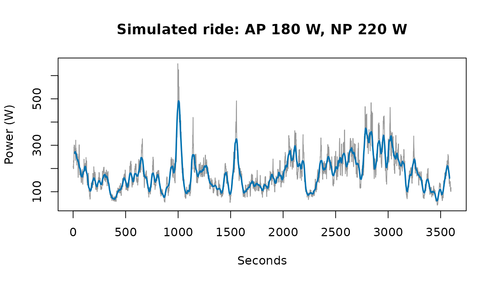
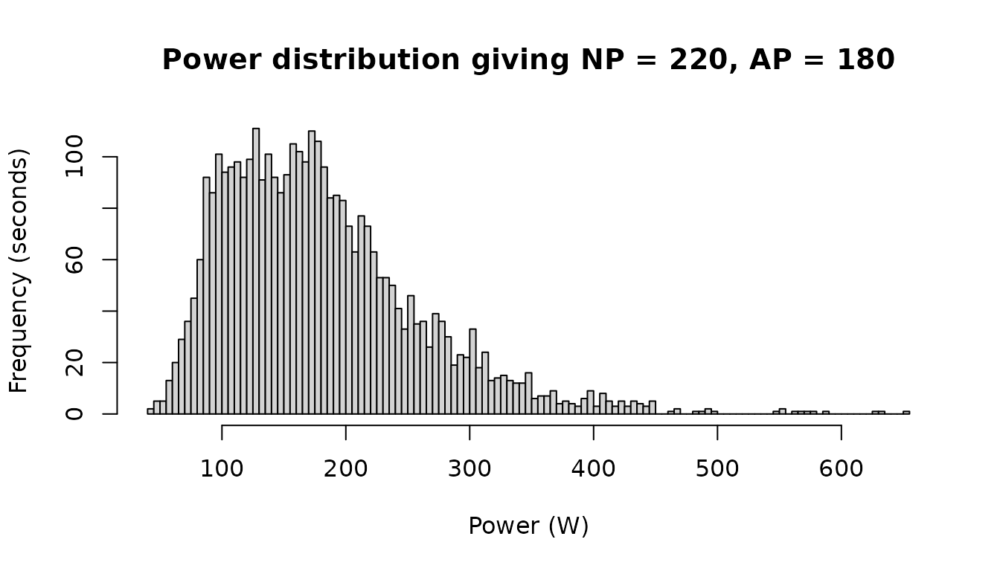
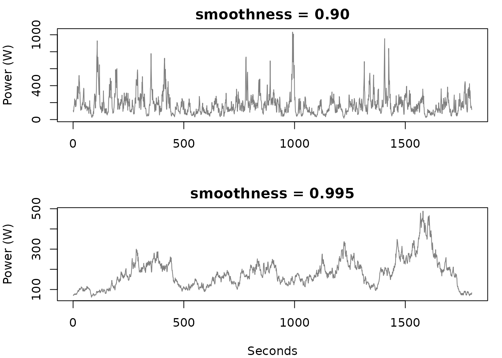

What does it take to achieve a specific NP and AP?
Source:vignettes/simulate_power.Rmd
simulate_power.RmdNormalised power weights hard efforts more heavily than a plain
average does, so a given pair of average and normalised power implies
something about how ragged the ride was. simulate_power()
inverts the usual calculation: instead of summarising a ride you already
rode, it builds a second-by-second series that would produce the numbers
you name.
ride <- withr::with_seed(1, simulate_power(3600, target_ap = 180, target_np = 220))
c(average_power = average_power(ride), normalised_power = normalised_power(ride))
#> average_power normalised_power
#> 180 220Both targets are hit exactly rather than approximately. The obvious way to do this does not work well.
Why not just optimise for it?
Asking an optimiser to choose all 3,600 values so that two summary statistics come out right is a badly posed problem: 3,600 unknowns, two constraints, and so infinitely many answers. It is also slow, and it lands on whichever solution happens to sit nearest wherever the search began.
A search starting from independent random values also has almost nothing to work with. Normalised power is defined on a thirty-second rolling mean, and independent noise averages away inside that window, so a series of random draws has a variability index of 1 however wide its spread.
noise <- withr::with_seed(1, stats::rpois(3600, 200))
variability_index(noise)
#> [1] 1.00022Scatter alone cannot lift normalised power above the average. What lifts it is sustained effort — holding 300 watts for two minutes, not flickering between 50 and 550 from one second to the next.
Shape first, then scale
So the shape comes from an autocorrelated process, which is what riding looks like, and the two targets are then met without any search over the ride.
Both metrics scale linearly with power, so their ratio is unaffected
by the overall level. That splits the problem cleanly in two. Raising
the series to a power stretches its peaks relative to its troughs and so
sets the variability index, target_np / target_ap;
multiplying through afterwards sets the average without disturbing the
ratio. One monotone equation in one unknown, solved to machine
precision, rather than a search over every second.
The result is a ride you could plausibly have done.
plot(
ride,
type = "l",
col = "grey60",
main = "Simulated ride: AP 180 W, NP 220 W",
xlab = "Seconds",
ylab = "Power (W)"
)
lines(zoo::rollmean(ride, 30, fill = NA), col = "#0072B2", lwd = 2)
The distribution behind that trace is skewed: a long stretch of moderate power with occasional hard efforts, which is what pulls normalised power forty watts clear of the average.
hist(
ride,
breaks = 100,
main = "Power distribution giving NP = 220, AP = 180",
xlab = "Power (W)",
ylab = "Frequency (seconds)"
)
Controlling the character of the session
smoothness sets how long efforts are held. It does not
change the statistics — both rides below hit the same average and
normalised power — but it changes the session those statistics describe,
from a punchy ride with frequent surges to a few long sustained
blocks.
punchy <- withr::with_seed(3, simulate_power(1800, 180, 220, smoothness = 0.90))
sustained <- withr::with_seed(3, simulate_power(1800, 180, 220, smoothness = 0.995))
par(mfrow = c(2, 1), mar = c(4, 4, 2, 1))
plot(punchy, type = "l", col = "grey50", main = "smoothness = 0.90",
xlab = "", ylab = "Power (W)")
plot(sustained, type = "l", col = "grey50", main = "smoothness = 0.995",
xlab = "Seconds", ylab = "Power (W)")
What the targets do not pin down
Two numbers do not make a ride. Nothing here knows about critical power, so a normalised power you could not hold for an hour comes back as a series that would exhaust anyone — but that is the target being impossible, not the simulation misbehaving. A steady hour at the same normalised power would fail the same test.
Within a feasible intensity the shape is reasonable, but the tail underneath is lognormal and widens as the variability index rises. The sustained peaks grow with it, and they grow out of proportion to each other:
peak_over <- function(ride, window) {
max(zoo::rollmean(ride, window, align = "right"))
}
vapply(c(steady = 190, ragged = 250), function(np) {
ride <- withr::with_seed(1, simulate_power(3600, 180, np))
c(`best 30s` = peak_over(ride, 30), `best 5min` = peak_over(ride, 300))
}, numeric(2))
#> steady ragged
#> best 30s 305.0352 645.8675
#> best 5min 234.1595 333.8548A ragged ride posts a thirty-second best far above anything its five-minute best would imply — not a power–duration curve any rider has. So read a high variability index as the point where the output is still a series with the right two numbers but no longer a plausible session.
Asking for a normalised power below the average is refused, since no
series has a variability index under 1. Asking for a very high one
alongside a low smoothness can also fail, because short surges cannot
lift a thirty-second average far; the error says so and suggests raising
smoothness.